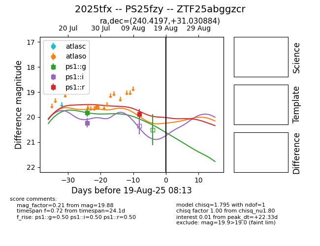

Target 2025tfx at 2025-08-19 08:13, see:
FINK: fink-portal.org/2025tfx
Lasair: lasair-ztf.lsst.ac.uk/objects/2025tfx
ALeRCE: alerce.online/object/2025tfx
TNS: wis-tns.org/object/2025tfx
YSE: ziggy.ucolick.org/yse/transient_detail/2025tfx
alt names
2025tfx (yse,tns)
ZTF25abggzcr (ztf)
PS25fzy (panstarrs)
coordinates:
equatorial (ra, dec) = (240.4197,+31.03088)
galactic (l, b) = (50.0796,+48.56338)
photometry
last atlaso=19.60, ps1::g=19.82, ps1::i=20.23, ps1::r=19.88
1 atlaso, 1 ps1::g, 1 ps1::i, 1 ps1::r detections
